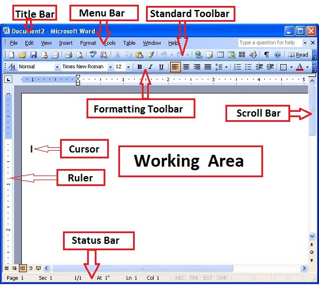

WORD PROCESSORS
Is an application software that enables the user to create, save, edit,format and print a document.
Example of word processors
Microsoft Word
Word star
Word perfect
Corel
Lotus
Word pro
K Word
Abiword
PC-Write
Advantages of using a word processor over a manual type writer
- A document can be stored in a computer for future reference
- Have special editing tools eg spelling and grammar checkers
- One can easily insert or replace a word or phrase without affecting the neatness of a document
- One can easily produce many copies using a printer without retyping
Features of a word processors
A word wrap which automatically starts a new line if there is insufficient room at the hand margin
Availability of different fonts, character sizes and styles
Text paragraph and page formatting eg text alignment, indenting, page number etc
Search and replace command which allow replacement of every incidence of a certain combination of characters with a set of characters
Undo which allows action that have been performed to be reversed Printing of documents single or multiple choices
Printing of documents single or multiple choices
Mail merging that is very essential while similar letters have to be sent
Ability to create and import tables, text and graphics from other programs
Factors to consider when selecting a word processor
- The type of operating system installed
- Its user friendliness
- Its formatting and editing features
- Whether it is commercial or open source software
Parts of a Microsoft word window
- Title bar
It a bar at the top of a the window and it displays the titile currently running application at task
- Menu Bar
It contains menus that provides lists of commands
- Status bar
It is an interactive strip at the bottom of the screen that acts as a communication link between the user and the program.

Editing - Its is making necessary changes in a document
TWO TYPING MODES
Insert Mode - When text is typed between the existing words or characters it pushes the existing text forward without replacing them
Type over mode – When text is typed between words or characters the new text automatically replaces the existing text by deleting it.
Formatting - Applying various styles or features in order to enhance the document appearance
Text Formatting Features
Changing font type, size style
Changing font colour
Underlining – Placing a line at the bottom of a text
Bolding – Making the text appear more darker than the rest
Italicizing –making the text slant forward
Superscript and subscript
Strikethrough